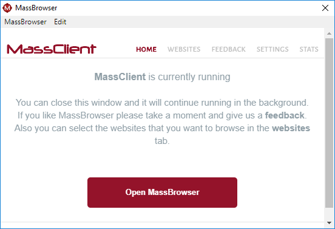
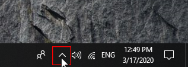
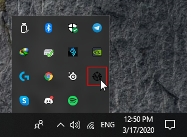
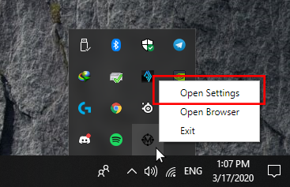
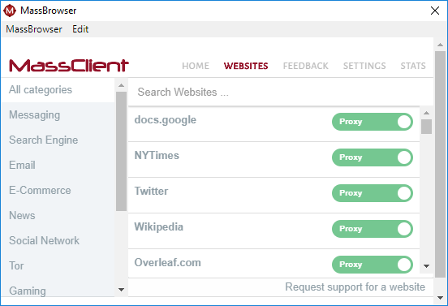
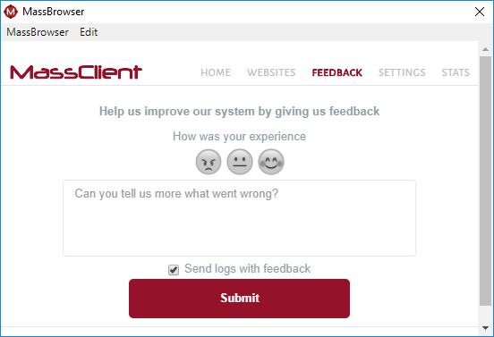
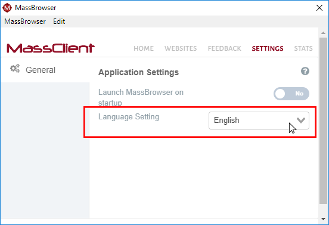

Home

This is MassClient home page. This page indicates that MassBrowser process is running in the background and you can close the application. If you want to close the application completely you have to do the following steps or kill the MassBrowser process using task manager.
-
click on "Show hidden icons"

-
Find MassBrowser icon and press right click on the icon

-
Now you can re-open the application GUI by clicking on "Open Settings" or you can close the MassBrowser completely by clicking on "Exit".

Websites

In this page you can configure MassBrowser to do ....
Feedback

We would really appreciate your feedbacks. Please use this page to send us your feedbacks. Your feedbacks help us improve our system.
Settings

You can change the settings of your MassClient in this page. At this moment we support English and Chinese. Use the drop down infront of the "Language Setting" to change your client language. You could always change this setting at anytime.